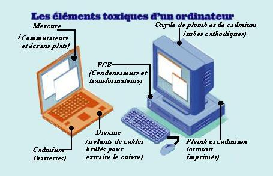
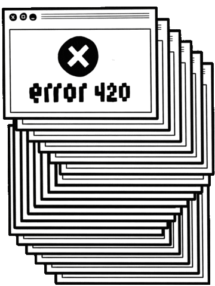
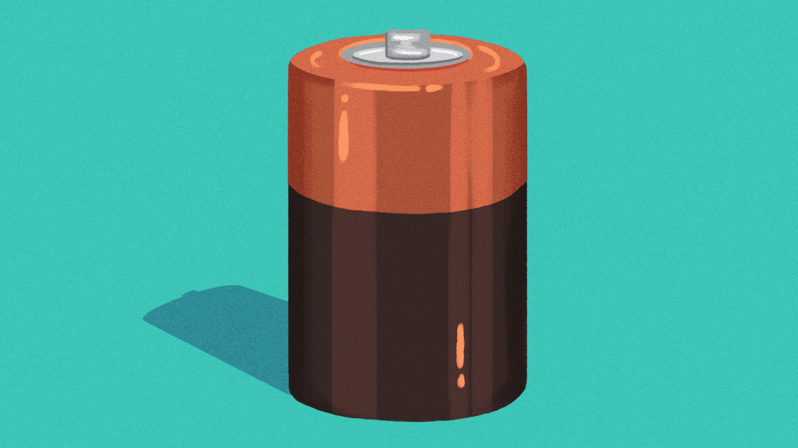

Une société hyperconnectée
Ces dernières années, l’utilisation d’Internet n'a cessé de croître et de plus en plus de personnes utilisent des téléphones portables, des tablettes et d’autres appareils informatiques (82% des français possèdent un ordinateur). L’impact environnemental des technologies de l’information continue à augmenter.
Les composants de nos matériels informatiques polluent. La fabrication, l’utilisation et la fin de vie de nos ordinateurs et tablettes représentent une pollution non sans conséquence pour notre environnement.
Voici quelques infos:
- On estime que 2% des émissions de CO2 de l’humanité sont liés aux technologies de l’information et de la communication (TIC), matériel informatique compris.
- Le groupe Grenoble Alpes Recherche français suggère qu'environ sept grammes de CO2 sont émis pour une simple recherche sur Google.
- Les composants actuels contiennent de nombreux produits chimiques dangereux : cadmium, plomb, béryllium, mercure, … 
- En 2016, l’humanité a produit 45 millions de tonnes de déchets électriques et électroniques (DEE). Et seulement 20% de ces déchets sont collectés et recyclés ! Les composants informatiques non recyclés se retrouvent dans la nature et portent atteinte à l’équilibre de la biodiversité.
Source des problèmes
Energie:
Les appareils numériques consomment de l'électricité. Une recherche sur internet, l'envoi d'un courriel requièrent un passage par plusieurs centres de données. Ces ensembles de serveurs informatiques et d'ordinateurs de traitement de données numériques consomment eux aussi, au premier chef pour leur refroidissement (qui représente environ 40 % de la facture énergétique pour ces installations). Cette énergie est nécessairement électrique, dont la production et le transport engendrent eux aussi des pollutions.
Déchets:
La fabrication d’ordinateurs portables emploie une forte proportion d’éléments de la famille des terres rares et cela consomme une quantité non négligeable de la production mondiale pour certains de ces matériaux. En moyenne, il faut mobiliser de 50 à 350 fois leur poids en matières pour produire des appareils électriques à forte composante électronique, soit par exemple 800 kg pour un ordinateur portable.

Suite à l'impact des dispositifs informatiques sur l'environnement, des mesures ont étés prises.
Une section du forum y est dediée: